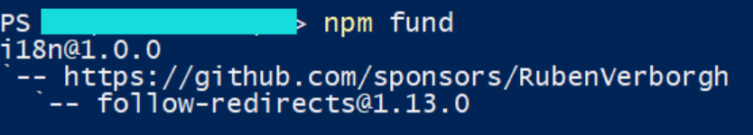
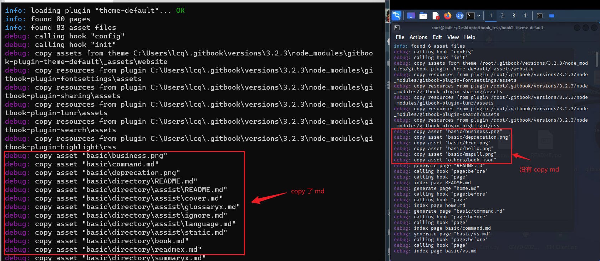
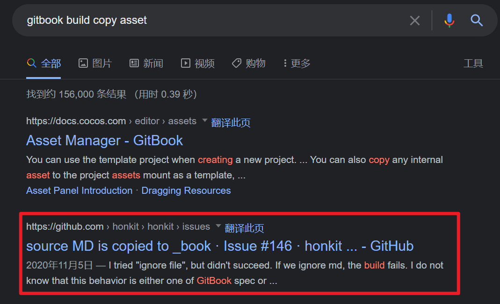
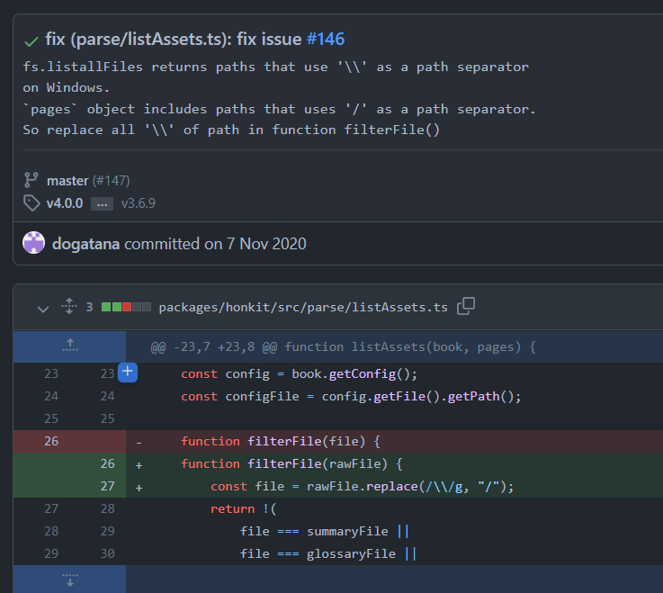

记录安装和使用 gitbook 可能会遇到的一些错误。
NPM 运行错误 1
错误描述
npm : 无法加载文件 D:...\nodejs\npm.ps1，因为在此系统上禁止运行脚本。
解决办法
- 在终端输入
get-ExecutionPolicy查看执行策略/权限；
输出 Restricted (受限制的)； - 终端输入
Set-ExecutionPolicy -Scope CurrentUser命令给用户赋予权限；
输入 RemoteSigned； - 终端输入
get-ExecutionPolicy查看一下权限，显示 RemoteSigned 就可以了。
NPM 运行错误 2
错误描述
javascript - 如何使用 loadVirtual 和 ENOLOCK 修复 npm 审计错误？
➜ npm audit
npm ERR! code ENOLOCK
npm ERR! audit This command requires an existing lockfile.
npm ERR! audit Try creating one first with: npm i --package-lock-only
npm ERR! audit Original error: loadVirtual requires existing shrinkwrap file
我运行 npm audit 并收到此错误。
当我在下面运行时:
➜ npm config get package-lock
true
➜ npm config get shrinkwrap
true
有人可以帮忙吗？至于如何解决？并且 npm audit fix --force 也无法正常工作...
解决办法
npm i --package-lock-only
NPM 提示信息
错误描述
1 package is looking for funding run npm fund for details.
1 package is looking for funding
run npm fund for details
解决办法
一般不是报错，运行一下 npm fund 就会发现有可能是开源项目寻求 donate。

gitbook init 错误
错误描述
运行 gitbook init 命令报错：TypeError [ERR_INVALID_ARG_TYPE]: The “data” argument must be of type string or an instance of Buffer,TypedArray, or DataView. Received an instance of Promise.
解决办法
nodejs 版本过高导致的。
- 卸载高版本 node.js，重新安装稍低版本的 node.js（Win 推荐 nvm 进行版本管理）
- 我之前装的是16版本，降到12版本 就可以了
C:\book>node -v
v12.16.2
C:\book>gitbook init
warn: no summary file in this book
info: create README.md
info: create SUMMARY.md
info: initialization is finished....
gitbook 新版本 "gitbook build" 命令导出的 html 不能跳转的解决办法
错误描述
html 无法跳转。由于点击事件被 js 代码禁用，所以点击没有反应，但是如果右键，在新窗口/新标签页打开的话是可以跳转的。
解决办法
找到 js 代码，并修改
- 找到项目目录 gitbook
- 找到目录下的 theme.js 文件
- 找到下面的代码
- 将
if(m)改成if(false)
由于代码是压缩后的，会没有空格，搜索的时候可以直接搜索：
if(m)for(n.handler&&修改保存即可。
node.js - Gitbook-cli 安装错误 TypeError： cb.apply 不是 graceful-fs 中的函数 - 堆栈溢出
错误描述
PS D:\xxx\zha0cai> npm install gitbook-cli -g
D:\Java\nodejs\gitbook -> D:\Java\nodejs\node_modules\gitbook-cli\bin\gitbook.js
+ gitbook-cli@2.3.2
added 578 packages from 672 contributors in 99.895s
PS D:\xxx\zha0cai> gitbook --version
CLI version: 2.3.2
Installing GitBook 3.2.3
D:\Java\nvm\v12.22.12\node_modules\gitbook-cli\node_modules\npm\node_modules\graceful-fs\polyfills.js:287
if (cb) cb.apply(this, arguments)
^
TypeError: cb.apply is not a function
at D:\Java\nvm\v12.22.12\node_modules\gitbook-cli\node_modules\npm\node_modules\graceful-fs\polyfills.js:287:18
at FSReqCallback.oncomplete (fs.js:169:5)
解决办法
方法一：gitbook 安装问题 - polyfills.js:287 - 简书 (jianshu.com)
打开 D:\Java\nvm\v12.22.12\node_modules\gitbook-cli\node_modules\npm\node_modules\graceful-fs\polyfills.js
搜索
fs.stat将下面三行代码注释掉 62 - 64 行//fs.stat = statFix(fs.stat) //fs.fstat = statFix(fs.fstat) //fs.lstat = statFix(fs.lstat)方法二：node.js - Gitbook-cli 安装错误 TypeError： cb.apply 不是 graceful-fs 中的函数 - 堆栈溢出 (stackoverflow.com)
C:\Users\xxx\AppData\Local\Temp\npm-13732-f16d4b38\registry.npmjs.org\gitbook-cli
for those who are very busy and have no time to debug: install an older version of gitbook: npm install gitbook-cli@2.1.2 --global modify this file: vim ~/.gitbook/versions/3.2.3/lib/output/website/copyPluginAssets.js, Replace all confirm: true to confirm: false gitbook serve方法三：
cd D:\Java\nodejs\node_modules\gitbook-cli\node_modules\npm\node_modules
npm install graceful-fs@latest --savenpm notice created a lockfile as package-lock.json. You should commit this file. + graceful-fs@4.2.10 added 662 packages from 108 contributors, updated 1 package and audited 1018 packages in 202.544s 6 packages are looking for funding run `npm fund` for details found 56 vulnerabilities (4 low, 21 moderate, 23 high, 8 critical) run `npm audit fix` to fix them, or `npm audit` for details重新执行
PS D:\xxx\zha0cai> gitbook --version CLI version: 2.3.2 PS D:\Mob\zha0cai> npm install -g gitbook-cli D:\Java\nodejs\gitbook -> D:\Java\nodejs\node_modules\gitbook-cli\bin\gitbook.js + gitbook-cli@2.3.2 removed 662 packages and updated 4 packages in 50.191s PS D:\xxx\zha0cai> gitbook --version CLI version: 2.3.2 Installing GitBook 3.2.3
Windows 下 gitbook build 出来的 _book 章节里面会包含 md 文件
错误描述
一个巨坑：==子目录（章节）==Linux build 出来的 _book 只会有 html 静态文件，但是 Windows 编译出来的会 md 和 html 共存。
解决办法
整了我一天茶饭不思后，第二天突然给小麦说了下，他在 Linux 下完美 build ，完全不会出现我这样的问题。那么问题来了，肯定就是 OS 的差异导致的，gitbook build --log debug 查看一下构建的日志。

可以看到 win 下 copy asset 会把子目录的 md 也一并复制，最终 google 搜索了一波关键字 gitbook build copy asset 关键字。全网独一条，老古董可太难了。。。最终还是 honkit 的一个 issue 解决了困扰我两天的问题。当然，你直接使用 Honkit 就不会有这个问题了。

我爱他
https://github.com/honkit/honkit/issues/146
https://github.com/honkit/honkit/pull/147/commits/c8cd086cfc24cb16bf425b11311f2520bb70b1a0
修改的文件路径 C:\Users\xxx\.gitbook\versions\3.2.3\lib\parse\listAssets.js

罪魁祸首：目录符号的差异
> fs.listallFiles returns paths that use '\\' as a path separator on Windows. `pages` object includes paths that uses '/' as a path separator. So replace all '\\' of path in function filterFile()
Highlight 导致的错误
错误描述
warn: "this.generator" property is deprecated, use "this.output.name" instead
warn: "navigation" property is deprecated
warn: "book" property is deprecated, use "this" directly instead
warn: "options" property is deprecated, use config.get(key) instead
Could not find the language 'json:book.json', did you forget to load/include a language module?
Error: Unknown language: "json:book.json"
at _highlight (D:\Java\nvm\v16.17.0\node_modules\honkit\node_modules\highlight.js\lib\core.js:1972:13)
at Object.highlight (D:\Java\nvm\v16.17.0\node_modules\honkit\node_modules\highlight.js\lib\core.js:1626:9)
at highlight (D:\Java\nvm\v16.17.0\node_modules\honkit\node_modules\@honkit\honkit-plugin-highlight\index.js:36:21)
at Object.code (D:\Java\nvm\v16.17.0\node_modules\honkit\node_modules\@honkit\honkit-plugin-highlight\index.js:60:20)
解决办法
观察 build 输出，将 highlight 插件注释掉。(该报错不影响使用~)
PS D:\xxx\zha0cai\gitbook-guide-book> honkit build
(node:16660) [DEP0147] DeprecationWarning: In future versions of Node.js, fs.rmdir(path, { recursive: true }) will be removed. Use fs.rm(path, { recursive: true }) instead
(Use `node --trace-deprecation ...` to show where the warning was created)
info: 13 plugins are installed
info: 13 explicitly listed
info: plugin "search-pro" is loaded
info: plugin "code" is loaded
info: plugin "splitter" is loaded
info: plugin "anchor-navigation-ex" is loaded
info: plugin "expandable-chapters" is loaded
info: plugin "versions-select" is loaded
info: plugin "ace" is loaded
info: plugin "chart" is loaded
info: plugin "graph" is loaded
info: plugin "katex" is loaded
info: plugin "highlight" is loaded
info: plugin "fontsettings" is loaded
info: plugin "theme-comscore" is loaded
info: plugin "theme-default" is loaded
info: found 85 pages
info: found 32 asset files
init!
gitbook 编译出错两个连续大括号
两个连续的大括号会出错，是 Nunjucks 语法应避免在文档中使用它们。Nunjucks Error expected variable end 解决办法。
错误描述
Template render error: (D:\Mob\zha0cai\gitbook-Windows 高级攻防-book\C 语言程序设计\05 - 函数、数组与指针.md) [Line 375, Column 25]
expected variable end
at Object._prettifyError (D:\Java\nvm\v16.17.0\node_modules\honkit\node_modules\nunjucks\src\lib.js:36:11)
at Template.render (D:\Java\nvm\v16.17.0\node_modules\honkit\node_modules\nunjucks\src\environment.js:538:21)
at Environment.renderString (D:\Java\nvm\v16.17.0\node_modules\honkit\node_modules\nunjucks\src\environment.js:380:17)
at Promise.apply (D:\Java\nvm\v16.17.0\node_modules\honkit\node_modules\q\q.js:1185:26)
at Promise.promise.promiseDispatch (D:\Java\nvm\v16.17.0\node_modules\honkit\node_modules\q\q.js:808:41)
at D:\Java\nvm\v16.17.0\node_modules\honkit\node_modules\q\q.js:1411:14
at runSingle (D:\Java\nvm\v16.17.0\node_modules\honkit\node_modules\q\q.js:137:13)
at flush (D:\Java\nvm\v16.17.0\node_modules\honkit\node_modules\q\q.js:125:13)
at processTicksAndRejections (node:internal/process/task_queues:78:11)
# 这样连续的会报错，在代码块里面也不允许连续。
int nArr[3][3] = {{12,15,12},
{15,33,99},
{88,77,44}
};
解决办法
int nArr2[4][3] = {
{12,15,12},
{15,33,99},
{88,77,44},
{99, 55, 75}
};
参考